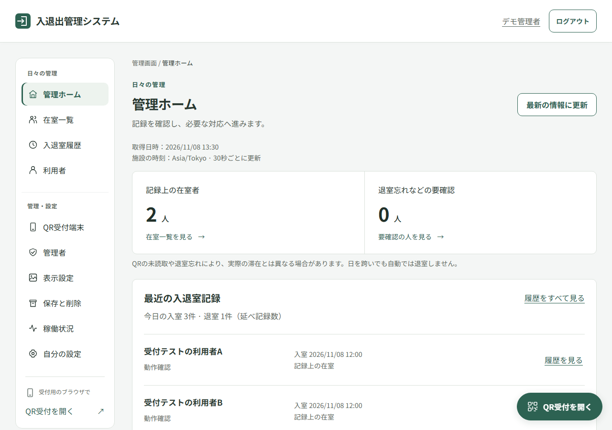
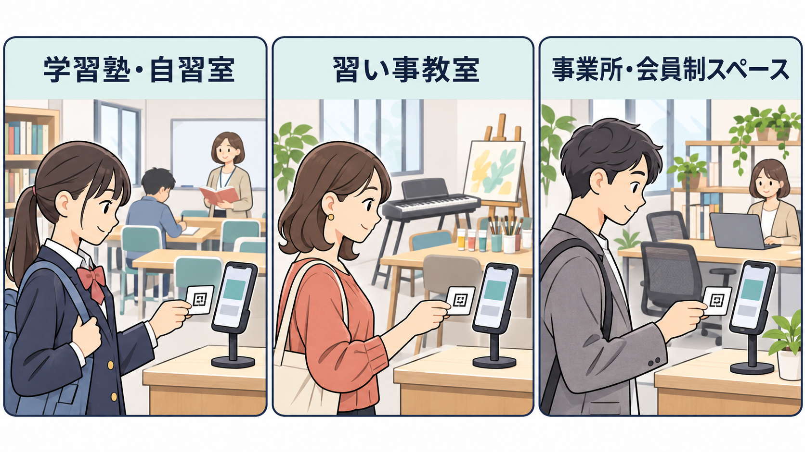
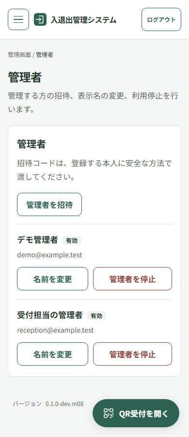

利用者へQRを配る
管理者が利用者を登録し、個人QRを発行・印刷します。入退出する人のアカウントは不要です。
OPEN SOURCE / NEXT.JS + HONO
紙の受付簿を、
スマホとQRで。
入口のスマホで個人QRを読み取り、入室・退室の時刻を記録。管理者は、記録上の在室者と過去の入退出を確認できます。画面・API・DBから導入・運用の手順まで、ひとつのOSSとして開発しています。
開発中のセルフホスト型OSSです。正式リリース・導入用イメージの一般配布は準備中です。

01 / PURPOSE
学習塾・自習室、習い事教室、小規模な事業所などでの利用を想定しています。紙の受付簿への記入や転記を減らし、日々の操作をスマホのブラウザで行うためのシステムです。
管理者が利用者を登録し、個人QRを発行・印刷します。入退出する人のアカウントは不要です。
承認した受付端末で入室・退室を選び、QRを読み取ります。モードは自動で交互に変わりません。
在室一覧と履歴を確認。理由付きの訂正・取消・手動追加、CSVでの保存に対応しています。

02 / DEMO
約1分56秒の操作デモです。利用者登録、入室、在室確認、退室、履歴の順に紹介します。日本語ナレーション・BGM付きで、字幕も選べます。
開発版の架空データによる実操作の収録です。カメラにはテスト映像、パスキーには仮想認証器を使っています。冒頭の生成映像は利用場面のイメージです。
音声：VOICEVOX:四国めたん / 音楽：BGMer「科学と学習」
動画の内容・素材クレジット ↗
03 / ENGINEERING
画面を隠すだけにせず、認証・権限・記録の整合性をAPIとデータベースで扱います。入退出を記録する操作と、利用者や履歴を管理する操作を分けて設計しました。

管理者はパスキーでログイン。受付端末にはQRを読み取るための権限を与え、名簿全体・履歴・CSVなどを返さないようにしています。
同じ受付要求の再送では最初の結果を返し、DBの制約・排他・トランザクションを組み合わせます。利用者ごとの未終了の在室記録は最大1件です。
Next.jsが画面、Honoが認証・認可と業務処理を担当します。PostgreSQLへの接続と操作をAPI側に集約し、Next.jsにDB資格情報を渡しません。
Vitest、実PostgreSQLを使う結合テスト、PlaywrightによるE2Eを用意。権限違反、二重送信、同時操作、通信失敗などを検査対象にしています。
04 / STACK
Docker Composeで画面・API・専用DBをまとめる構成です。公開リポジトリに、利用ガイド、システム構成、開発・DBの説明を揃えています。
05 / SOURCE & GUIDES
現在は開発中です。空の標準サーバーへの導入や外部バックアップの運用など、確認が残る項目を公開資料に記載しています。試す場合は架空データを使用してください。
ソフトウェアは無料のMITライセンスです。サーバー・ドメイン・バックアップ先などの運用費は設置者が負担します。
QRの貸し借りや退室忘れにより、記録と実際の滞在が異なる場合があります。扉の解錠や通信できない状態での確定記録は行いません。